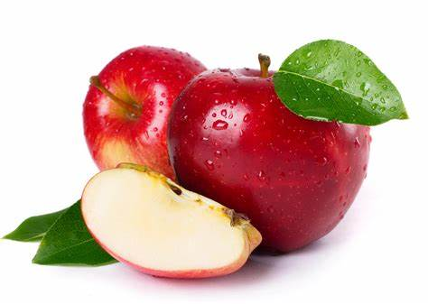

Información nutricional de frutas y verduras
| Nombre | Calorías | Carbohidratos | Proteínas | Grasas | Fibra | Vitaminas | Minerales | |
|---|---|---|---|---|---|---|---|---|
|  | Manzana | 52 | 14g | 0.3g | 0.2g | 2.4g | Vitamina C | Calcio, Hierro, Potasio |
 |
Plátano | 89 | 23g | 1.1g | 0.3g | 2.6g | Vitaminas C, B6 | Calcio, Hierro, Potasio |
 |
Naranja | 47 | 12g | 0.9g | 0.1g | 2.4g | Vitamina C | Calcio, Hierro, Potasio |
| Pera | 57 | 26.6g | 0.43g | 0.2g | 6g | Vitaminas A1,B1,B2,B3,C | Potasio, Magnesio, Fosforo | |
 |
Tomate | 18 | 3.5g | 1.20g | 0.20g | 1.1g | Vitaminas A1,B9,C | Potasio, Calcio,Fosforo |
| Cebolla | 42 | 1.6g | 0.25g | 8.6g | 1.1g | Vitaminas B1,B2,B3,B9 | Hierro, Calcio, Magnesio | |
| Pepino | 15 | 2g | 0.66g | 0.1g | 0.8g | Vitaminas A,B1,B2,B3,B6 | Hierro, Calcio, Fosforo | |
| Sandia | 32 | 7.8g | 0.62g | 0.43g | 0.5g | Vitaminas A,C | Potasio, Calcio, Magnesio |